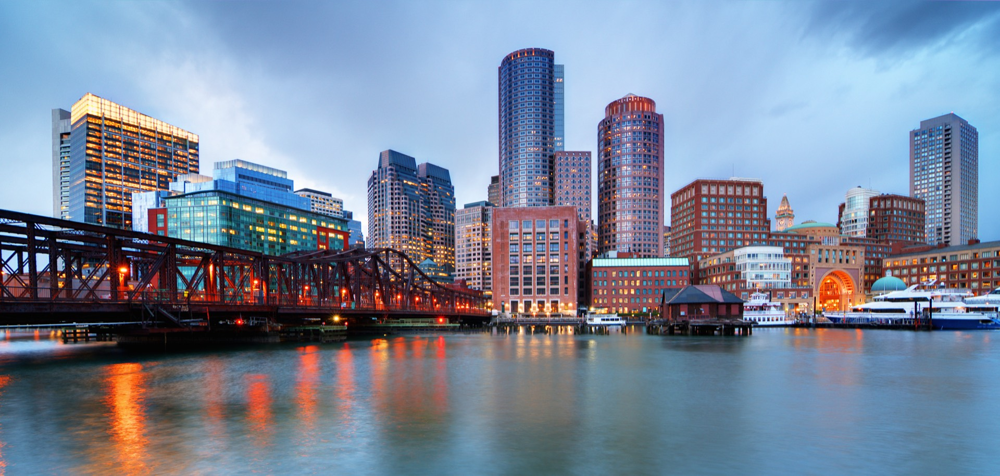

Boston Harbor and the surrounding Massachusetts Bay waters rank among the finest fishing grounds on the Atlantic coast. From the thrill of hooking a 40-pound striped bass to the raw power of battling a giant bluefin tuna, a fishing charter out of Boston delivers experiences that anglers remember for a lifetime.
Whether you're a seasoned fisherman or picking up a rod for the first time, this guide will help you plan a fishing charter that matches your skill level, target species, and expectations. At Atlantis Charter, our fleet includes purpose-built fishing vessels skippered by captains who have spent decades mastering these waters.
Target Species in Boston Harbor
Massachusetts Bay is a remarkably productive ecosystem. The convergence of cold northern currents and warm Gulf Stream waters creates conditions that support an incredible variety of game fish. Here are the species you can target on a Boston fishing charter:
Striped Bass
The undisputed king of New England fishing, striped bass (or "stripers") migrate through Boston Harbor from May through November. These powerful, acrobatic fish can reach 50+ pounds and put up a fight that thrills beginners and experts alike. The best action typically comes in June and again in September-October during the fall migration. Stripers are caught using live bait, lures, and fly fishing techniques, often within sight of the Boston skyline.
Bluefin Tuna
Boston is one of the premier bluefin tuna destinations in the world. Giant bluefin, some exceeding 1,000 pounds, cruise the waters of Stellwagen Bank just 25 miles from the harbor. The season runs from June through November, with peak action in August and September. Tuna charters are typically full-day trips on larger sport fishing boats equipped with heavy tackle, fighting chairs, and experienced mates.
Bluefish
Aggressive, fast, and abundant, bluefish provide non-stop action from June through October. They travel in schools and will attack almost anything that moves, making them perfect for beginners. Bluefish in the 8-15 pound range are common in Boston Harbor, and catching a dozen or more in a half-day trip is not unusual.
Cod and Haddock
These iconic New England groundfish are available year-round, though spring and fall are the most productive seasons. Cod and haddock fishing involves bottom-fishing with bait rigs over rocky structure and wrecks. Many guests enjoy this style of fishing because it is relaxing yet consistently productive.
Fluke and Flounder
Fluke (summer flounder) and winter flounder are excellent table fish that can be caught in the harbor and nearshore waters. Fluke fishing peaks from June through September, while flounder are most active in April and May.

Seasonal Fishing Calendar
Timing is everything when it comes to fishing. Here is a month-by-month breakdown of what to expect on a Boston fishing charter:
- April: Season opener. Winter flounder are active in the harbor. Early striped bass begin arriving from the south.
- May: Striped bass fishing picks up significantly. Cod fishing is excellent on offshore structure. Water temperatures begin to rise.
- June: Prime time for striped bass. Bluefish arrive in force. Bluefin tuna season begins on Stellwagen Bank. Fluke fishing starts.
- July: Peak summer fishing. All species are active. Warm weather makes for comfortable days on the water. Early morning and evening charters produce the best striper action.
- August: Bluefin tuna fishing reaches its peak. Stripers, blues, and fluke remain strong. This is the busiest month - book early.
- September: Many captains consider this the best month overall. The fall striper migration creates incredible action. Tuna fishing remains hot. Bluefish blitzes are common.
- October: Large migrating stripers and blues pass through the harbor. Excellent topwater fishing. Cod fishing improves as water cools.
- November: Late-season trophy stripers. Bluefin tuna stragglers. Cod and haddock fishing picks up. Weather becomes more unpredictable.
Types of Fishing Charters
We offer several types of fishing experiences, each designed for different preferences and skill levels:
Inshore Half-Day Charter (4 Hours)
Perfect for families, beginners, and anyone targeting striped bass, bluefish, or flounder. You'll fish within the harbor and nearshore waters, never far from the city skyline. All tackle, bait, and instruction are included. This is our most popular fishing charter for first-timers.
Inshore Full-Day Charter (8 Hours)
A full day lets you explore more water, try different techniques, and maximize your catch. You'll cover both harbor and offshore structure, targeting multiple species. Lunch and refreshments can be arranged through our catering partners.
Offshore Tuna Charter (10-12 Hours)
A dedicated tuna trip takes you to Stellwagen Bank and the surrounding deep-water grounds. These are physically demanding, exhilarating experiences that require stamina and determination. Tackle, bait, ice, and an experienced mate are included. You'll need to bring your own food and drinks, or arrange catering in advance. Check our packing guide for recommended items.
Fly Fishing Charter
For experienced anglers, our fly fishing charters target striped bass and bluefish on light tackle in the harbor flats and estuaries. These intimate trips operate on smaller boats with a maximum of 2-3 anglers and a guide who knows every flat, channel, and tide pattern in the harbor.
What's Included in Your Fishing Charter
Every Atlantis Charter fishing trip includes:
- USCG-licensed captain with extensive local knowledge
- All fishing tackle, rods, reels, and terminal tackle
- Live and artificial bait
- Safety equipment and life jackets
- Fish cleaning and filleting service
- Cooler with ice for your catch
- Massachusetts fishing license (covered under the vessel's commercial license)
Tips for a Great Fishing Charter
After thousands of fishing trips, our captains have compiled their best advice for guests:
- Book according to species, not just date. Tell us what you want to catch and we'll recommend the best window.
- Communicate your experience level. Our captains adjust their approach based on your skill. There is no judgment - we love introducing new anglers to the sport.
- Dress in layers. It is almost always cooler on the water than on land, even in summer. Bring a light jacket and sunscreen.
- Take seasickness precautions. If you're prone to motion sickness, take medication the night before and morning of your trip. It is much easier to prevent than to treat.
- Bring polarized sunglasses. They reduce glare and help you spot fish near the surface.
- Listen to your captain. They read the water, tides, and fish behavior every day. Trust their instincts on where and how to fish.
Catch and Release vs. Keep
All fishing charters follow Massachusetts Division of Marine Fisheries regulations regarding size limits, bag limits, and seasonal closures. Our captains practice responsible fishing and encourage catch-and-release for species that are under conservation pressure. That said, many species are abundant and delicious - and there is nothing quite like bringing home your own fresh-caught dinner.
Our crew will fillet and bag your catch at the dock, ready for you to take home and cook. Some of our restaurant partners in the Seaport District will even prepare your catch for you - just ask your captain for recommendations.
Book Your Fishing Charter Today
Our captains are ready to put you on the fish. Contact us to reserve your spot.
Request a Quote